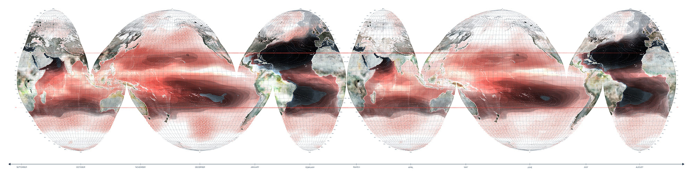
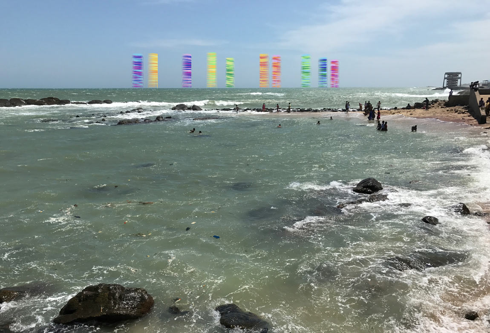

The ocean and the monsoon
The ocean covers seventy percent of the earth’s surface, provides moisture for the atmosphere and plays a key role in the production of weather and climate. The circulation of heat and salt between ocean basins and depths drives the intensities and spatial patterns of moisture transferral from the terrestrial to the atmospheric essential to the global hydrological cycle. As rain erodes rock and rivers carry the minerals and salts of earth’s geologic history to the ocean, variable bodies of salty and fresh water create dynamic volumes of sea to air interaction that play an integral role in the production of weather events.
“An overarching question in climate research is to understand how changes in the Earth’s water cycle – meaning rainfall and evaporation, river discharges and so forth, ocean circulation, and climate link together”.1
Above: The global distribution of salt in the ocean from September to March (left) and March to September (right).
Between two oceans
The south Asian monsoon is a microcosm of salt-temperature and sea-air coupled interactions and circulations facilitated by dynamic relationships between the Arabian Sea and the Bay of Bengal that govern climatological stability across time and space. Annual cycles of evaporation and precipitation allow these two oceanic bodies to exchange masses of heat and salt that feed the northeast and southwest monsoons, colouring life across the calendar year and the Indian subcontinent.
Top: Salt exchange between the Bay of
Bengal and the Arabian Sea in April and
October. The fresh water transported from
the Bay of Bengal into the Arabian Sea plays
a role in determining the timing of monsoon
onset and the strength of the monsoon each
year. Drawing after H.L. Roman-Stork, B.
Subramanyam and V.S.N. Murty, ‘The Role of
Salinity in the Southeastern Arabian Sea in
Determining Monsoon Onset and Strength’,
Journal of Geophysical Research, Oceans, vol.
125, 2020, p. 9.
Bottom: Clouds forming over Villingili in the
Maldives, April 2015.
Forecasting
Exchanges of salt around the southern tip of India play a significant role in the development of the Arabian Sea mini warm pool whose life cycle apex determines the magnitude and onset of the southwest monsoon that triggers the burst of monsoon rains over Kerala. While forecasting the monsoon’s arrival and strength has preoccupied but alluded meteorologists, economists, and government leaders for centuries, taking measure of the mini warm pool that convenes in February each year below the wind-driven low oceanic surface topography in the vicinity of the Lakshadweep archipelago, appears now to hold the key to monsoon prediction.
“Salinity is the variable we can use to measure that coupling. It’s a critical factor, and it will eventually be used to improve climate forecasts”.2
Top left: Studies have shown that the northward extent of freshwater travel into the southeastern Arabian Sea appears to correlate with monsoon intensity.
Top right: The development of the Lakshadweep Low and High.
Above: Conventional weather forecasting
instruments at the Regional Meteorological
Centre, Nungambakkam, Chennai.
Acting together, apart
The global distribution of six salty warm pools in three pairs of north-south equatorial couplings trigger sequential sea-air interactions that intensify the sea-air partnership in climate creation. One of these pairings mirrors the Arabian Sea mini warm pool with the Seychelles Dome. The coupling of the development of their oceanic salt columns across space and time plays a crucial role in in fuelling the southwest monsoon and in the cross-equatorial currents that circumnavigate the globe.
“The ocean has long been understood as either a surface to be crossed or as a resource, but it is actually a volume with materiality that challenges models of climate politics as competitive zero-sum games between states”.3
Top: Currents and waves in the Indian
Ocean. Drawing after I. Manola, F.M.
Selton, W.P.M. Ruijter and W. Hazeleger,
‘The ocean-atmospheric response to
wind-induced thermocline changes in
the tropical South Western Indian Ocean,
Climate Dynamics, no. 45, 2015, pp. 989-
1007 and D. Shanker and S.R. Shetye, ‘On
the dynamics of the Lakshadweep high
and low in the southeastern Arabina Sea’,
Journal of Geophysical Resarch, vol. 102,
no. C6, 1997, pp. 12,551–12,562.
Right: Looking towards the Laccadive
Sea, Male, Maldives, April 2015.
Salt and future climates
The oceanic movement of salt helps to balance the earth’s heat budget and maintain stability within ocean systems; yet it also complicates the relations between air and sea. As global temperatures rise and the global hydrological cycle is amplified, the Bay of Bengal appears to be freshening and the Arabian Sea is becoming saltier. The changing distribution of salt will impact the stratification of the ocean and its ability to maintain the heat, or fuel, that the monsoon requires.
Kanyakumari, at the southern tip of Tamil Nadu is known as the place where three oceans meet, referring to the Arabian Sea, the Laccadive Sea and the Bay of Bengal. It is a pivotal site in the transfer of salt and fresh water between these interconnected bodies of water.
Sea hotels
Sea hotels is a subset of the AIR Grid research conducted by Doctor Watson Architects, Clerkenwell, London. AIR Grid research asks: what if selfconsciousness were transferred from humans to architecture? In such a scenario human history is, of course, ended. But what about architecture, does architecture cease to mark human history and enter into its own unique temporal phase?
Sea hotels are amongst the first kinds of selfconscious architectures to emerge. They have rarely been seen, but recently a group of ten structures were sited off the shoreline of Kanyakumari at the southern tip of Tamil Nadu in India, where the Indian Ocean intersects with the Arabian Sea and the Bay of Bengal.
Some people began to make romantic images of the sea hotels, others began to speculate about their arrival, or what it might be like to row out and visit them at night. A considerable archive of material has been assembled, documenting these kinds of imaginary engagements with the structures. The visual material shown here is a sample taken from that archive.

1 Nasa Earth Observatory, ‘A Measure of salt’, 27 August 2011 – 02 June 2012, https://earthobservatory.nasa.gov/ images/78250/a-measure-of-salt (accessed 10 January 2021).
2 Nasa Earth Observatory, ‘A Measure of salt’, 27 August
2011 – 02 June 2012, https://earthobservatory.nasa.gov/
images/78250/a-measure-of-salt (accessed 10 January
2021).
3 J.S. Lehman, ‘Volumes beyond volumetrics: A response to
Simon Dalby’s ‘The Geopolitics of Climate Change’, Political
Geography, vol. 37, 2013, p. 52.
Texts by Christina Leigh Geros.
Sea hotels text by Victoria Watson.
Design by Jonathan Cane.
The ocean and the monsoon
Drawing by Christina Leigh Geros.
Between two oceans
Drawing by Christina Leigh Geros.
Photograph by Lindsay Bremner.
Forecasting
Drawing by Christina Leigh Geros.
Photographs by Lindsay Bremner.
Acting together, apart
Drawing by Christina Leigh Geros.
Photograph by Lindsay Bremner.
Salt and future climates
Photographs by Lindsay Bremner.
Video by Lindsay Bremner, edited by Christina Leigh Geros.
Sea hotels
Photographs of AIR GRID research by Victoria Watson.
Photographs of Kanyakumari by Lindsay Bremner.
Collaged drawings and videos of sea hotels by
Victoria Watson.